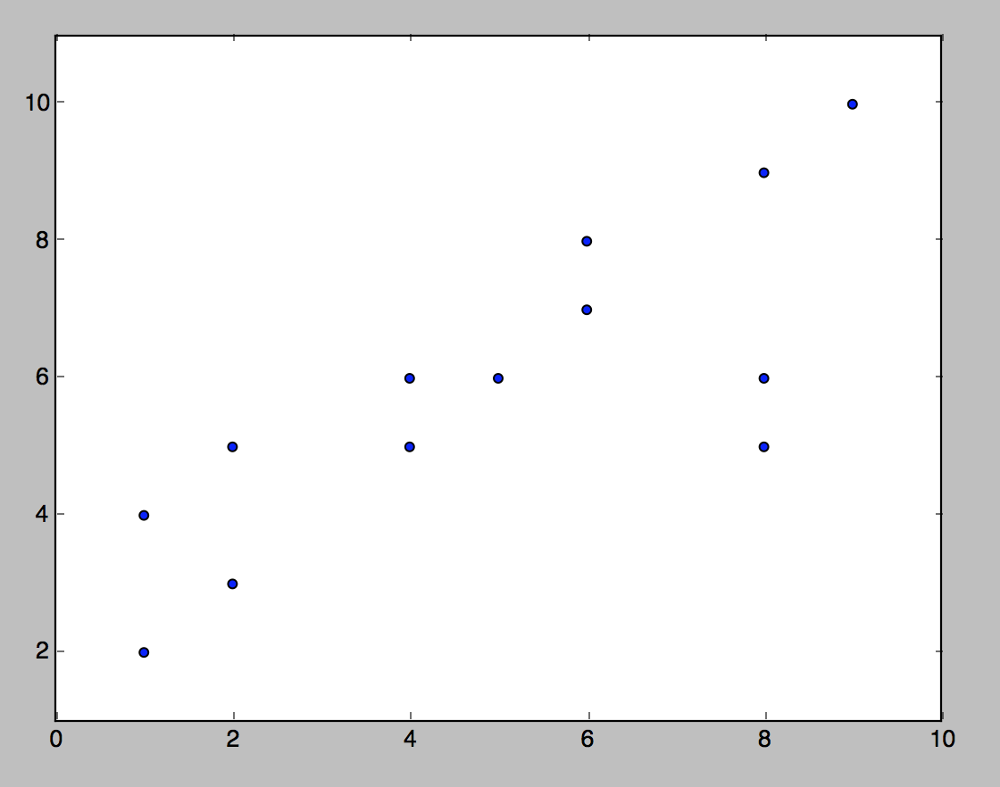

Parametric Models
These are the models which repsent the relationship between in the predictor variables and
the output in form an equation for e.g. a linear equation. lets consider the following
data set:

For this dataset if we were to apply any kind of parametric model, we first need to assume
the dstribution of the data. Here the relation seems to be linear in nature. eyballing the
data in order to figure out the type of relation wont work if the number of dimensions high.
In such scenarios we need to try different models and choose the one with the least error.
So, back to the example here assuming a linear relation we can model our data as a linear
regression model. Generally the data will not be linearly distributed and hence a linear
model will not lead to most optimal result but applying a linear model is a good starting
step for initial data analysis.
Non-parametric Models
In non-parametric models as opposed to parametric models, we don't assume anything, rather
the data tells us what the 'regression' should look like.
Non-Parametric Model can be written as:
yi = f(xi) + ei
Here f(.) can be any function. The data will decide what the function f looks like. Data
will not tell you the analytic expression for f(.), but it will give you its graph given
your data set.
Choosing one over other
The decision of using either a parametric or a non-parametric model depends on the reason
behind the analysis. If you are doing it understand how the different predictors contribute
to the model and their general relationship among themselves, then you should use a parametric
model as eqaution of the model can be used to understand the contributions pretty well.
For e.g. let
y = 3x + c be the equation for the linear regression line for some dataset.
So, just by looking at it we can understand that an increase in of 1 in x will lead to
an increase of 3 in y. Such an insight cannot be drawn from non-parametric model as we
don't know how the predictors are interacting with each other and the output variable.
On the other hand if you just concerned with the output and do not care how the
factors interact with each other then using either type of model is fine as long
as it suits your data.